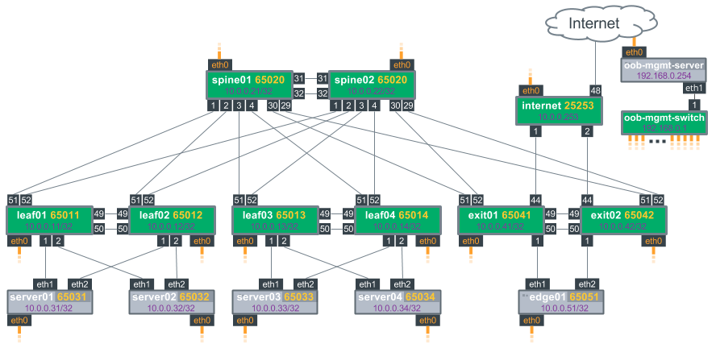

Redistribute Neighbor
Redistribute neighbor provides a mechanism for IP subnets to span racks without forcing the end hosts to run a routing protocol.
The fundamental premise behind redistribute neighbor is to announce individual host /32 routes in the routed fabric. Other hosts on the fabric can then use this new path to access the hosts in the fabric. If multiple equal-cost paths (ECMP) are available, traffic can load balance across the available paths natively.
The challenge is to accurately compile and update this list of reachable hosts or neighbors. Luckily, existing commonly-deployed protocols are available to solve this problem. Hosts use ARP to resolve MAC addresses when sending to an IPv4 address. A host then builds an ARP cache table of known MAC addresses: IPv4 tuples as they receive or respond to ARP requests.
In the case of a leaf switch, where the default gateway is deployed for hosts within the rack, the ARP cache table contains a list of all hosts that have ARP'd for their default gateway. In many scenarios, this table contains all the layer 3 information that's needed. This is where redistribute neighbor comes in, as it is a mechanism of formatting and syncing this table into the routing protocol.
Contents
Availability
Redistribute neighbor is distributed as python-rdnbrd.
Target Use Cases and Best Practices
Redistribute neighbor was created with these use cases in mind:
-
Virtualized clusters
-
Hosts with service IP addresses that migrate between racks
-
Hosts that are dual connected to two leaf nodes without using proprietary protocols such as MLAG
-
Anycast services needing dynamic advertisement from multiple hosts
Cumulus Networks recommends following these guidelines with redistribute neighbor:
-
Use a single logical connection from each host to each leaf.
-
A host can connect to one or more leafs. Each leaf advertises the /32 it sees in its neighbor table.
-
A host-bound bridge/VLAN should be local to each switch only.
-
Leaf switches with redistribute neighbor enabled should be directly connected to the hosts.
-
IP addressing must be non-overlapping, as the host IPs are directly advertised into the routed fabric.
-
Run redistribute neighbor on Linux-based hosts primarily; other host operating systems may work, but Cumulus Networks has not actively tested any at this stage.
How It Works
Redistribute neighbor works as follows:
-
The leaf/ToR switches learn about connected hosts when the host sends an ARP request or ARP reply.
-
An entry for the host is added to the kernel neighbor table of each leaf switch.
-
The redistribute neighbor daemon, rdnbrd, monitors the kernel neighbor table and creates a /32 route for each neighbor entry. This /32 route is created in kernel table 10.
-
Quagga is configured to import routes from kernel table 10.
-
A route-map is used to control which routes from table 10 are imported.
-
In Quagga these routes are imported as table routes.
-
BGP, OSPF and so forth are then configured to redistribute the table 10 routes.
Configuration Steps
The following configuration steps are based on the reference topology set forth by Cumulus Networks. Here is a diagram of the topology:

Configuring the Leaf(s)
The following steps demonstrate how to configure leaf01, but the same steps can be applied to any of the leafs.
-
Configure the host facing ports, using the same IP address on both host-facing interfaces as well as a /32 prefix. In this case, swp1 and swp2 are configured as they are the ports facing server01 and server02:
cumulus@leaf01:~$ net add loopback lo address 10.0.0.11/32cumulus@leaf01:~$ net add interface swp1 address 10.0.0.11/32cumulus@leaf01:~$ net add interface swp2 address 10.0.0.11/32The commands produce the following configuration in the /etc/network/interfaces file:
auto loiface lo inet loopbackaddress 10.0.0.11/32auto swp1iface swp1address 10.0.0.11/32auto swp2iface swp2address 10.0.0.11/32 -
Enable the daemon so it starts at bootup:
cumulus@leaf01:~$ sudo systemctl enable rdnbrd.service -
Start the daemon:
cumulus@leaf01:~$ sudo systemctl restart rdnbrd.service -
Configure routing:
-
Add the table as routes into the local routing table using the Quagga vtysh shell:
cumulus@leaf01:~$ sudo vtyshleaf01(config)# conf tleaf01(config)# ip import-table 10 -
Define a route-map that matches on the host-facing interfaces:
leaf01(config)# route-map REDIST_NEIGHBOR permit 10leaf01(config-route-map)# match interface swp1leaf01(config-route-map)# route-map REDIST_NEIGHBOR permit 20leaf01(config-route-map)# match interface swp2 -
Apply that route-map to routes imported into table:
leaf01(config)# ip protocol table route-map REDIST_NEIGHBOR -
Redistribute the imported table routes in into the appropriate routing protocol.
BGP:leaf01(config)# router bgp 65001leaf01(config-router)# address-family ipv4 unicastleaf01(config-router-af)# redistribute table 10leaf01(config-router-af)# endOSPF:
leaf01(config)# router ospfleaf01(config-router)# redistribute table 10 -
Save the configuration and exit vtysh.
leaf01(config)# exitleaf01# write memleaf01# exitcumulus@leaf01:~$
-
Here are the contents of /etc/quagga/Quagga.conf from the reference topology:
cumulus@leaf01$ cat /etc/quagga/Quagga.conf!interface swp51 no ipv6 nd suppress-ra ipv6 nd ra-interval 3!interface swp52 no ipv6 nd suppress-ra ipv6 nd ra-interval 3!ip import-table 10 distance 19route-map rdarp permit 1match interface swp2route-map rdarp permit 2match interface swp1!ip protocol table route-map rdarprouter bgp 65011 bgp router-id 10.0.0.11 network 10.0.0.11/32 bgp bestpath as-path multipath-relax bgp bestpath compare-routerid neighbor fabric peer-group neighbor fabric description Internal Fabric Network neighbor fabric capability extended-nexthop neighbor fabric advertisement-interval 0 neighbor fabric timers 1 3 neighbor fabric timers connect 3 neighbor fabric remote-as external neighbor swp51 interface v6only neighbor swp51 peer-group fabric neighbor swp52 interface v6only neighbor swp52 peer-group fabric redistribute table 10!address-family ipv6 unicast neighbor fabric activate neighbor swp51 activate neighbor swp52 activateexit-address-family!Configuring the Host(s)
There are a few possible host configurations that range in complexity. This document only covers the basic use case: dual-connected Linux hosts with static IP addresses assigned.
Additional host configurations will be covered in future separate knowledge base articles.
Configuring a Dual-connected Host
Configure a host with the same /32 IP address on its loopback (lo) and uplinks (in this example, eth1 and eth2). This is done so both leaf switches advertise the same /32 regardless of the interface. Cumulus Linux relies on ECMP to load balance across the interfaces southbound, and an equal cost static route (see the configuration below) for load balancing northbound.
The loopback hosts the primary service IP address(es) and to which you can bind services.
Configure the loopback and physical interfaces. Referring back to the topology diagram, server01 is connected to leaf01 via eth1 and to leaf02 via eth2. You should note:
-
The loopback IP is assigned to lo, eth1 and eth2.
-
The post-up ARPing is used to force the host to ARP as soon as its interface comes up. This allows the leaf to learn about the host as soon as possible.
-
The post-up ip route replace is used to install a default route via one or both leaf nodes if both swp1 and swp2 are up.
cumulus@server01$ cat /etc/network/interfaces# The loopback network interfaceauto loiface lo inet loopbackauto lo:1iface lo:1address 10.1.0.101/32auto eth1iface eth1address 10.1.0.101/32post-up for i in {1..3}; do arping -q -c 1 -w 0 -i eth1 10.0.0.11; sleep 1; donepost-up ip route add 0.0.0.0/0 nexthop via 10.0.0.11 dev eth1 onlink nexthop via 10.0.0.12 dev eth2 onlink || trueauto eth2iface eth2address 10.1.0.101/32post-up for i in {1..3}; do arping -q -c 1 -w 0 -i eth2 10.0.0.12; sleep 1; donepost-up ip route add 0.0.0.0/0 nexthop via 10.0.0.11 dev eth1 onlink nexthop via 10.0.0.12 dev eth2 onlink || true
Installing ifplugd
Additionally, install and use ifplugd. ifplugd modifies the behavior of the Linux routing table when an interface undergoes a link transition (carrier up/down). The Linux kernel by default leaves routes up even when the physical interface is unavailable (NO-CARRIER).
Install ifplugd on the host and modify the settings in /etc/default/ifplugd:
cumulus@server01:~$ sudo apt-get update cumulus@server01:~$ sudo apt-get install ifplugdEdit /etc/default/ifplugd as follows, where eth1 and eth2 are the interface names that your host uses to connect to the leaves.
cumulus@server01$ cat /etc/default/ifplugdINTERFACES="eth1 eth2"HOTPLUG_INTERFACES=""ARGS="-q -f -u10 -d10 -w -I"SUSPEND_ACTION="stop"For full instructions on installing ifplugd on Ubuntu, follow this guide.
Known Limitations
TCAM Route Scale
This feature adds each ARP entry as a /32 host route into the routing table of all switches within a summarization domain. Take care to keep the number of hosts minus fabric routes under the TCAM size of the switch. Review the Cumulus Networks datasheets for up to date scalability limits of your chosen hardware platforms. If in doubt, contact Cumulus Networks support or your Cumulus Networks CSE; they will be happy to help.
Possible Uneven Traffic Distribution
Linux uses source L3 addresses only to do load balancing on most older distributions.
Silent Hosts Never Receive Traffic
Freshly provisioned hosts that have never sent traffic may not ARP for their default gateways. The post-up ARPing in /etc/network/interfaces on the host should take care of this. If the host does not ARP, then rdnbrd on the leaf cannot learn about the host.
Support for IPv4 Only
This release of redistribute neighbor supports IPv4 only.
VRFs Are not Supported
This release of redistribute neighbor does not support VRFs.
Troubleshooting
-
How do I determine if rdnbrd (the redistribute neighbor daemon) is running?
Use systemd to check:
cumulus@leaf01$ systemctl status rdnbrd.service* rdnbrd.service - Cumulus Linux Redistribute Neighbor ServiceLoaded: loaded (/lib/systemd/system/rdnbrd.service; enabled)Active: active (running) since Wed 2016-05-04 18:29:03 UTC; 1h 13min agoMain PID: 1501 (python)CGroup: /system.slice/rdnbrd.service`-1501 /usr/bin/python /usr/sbin/rdnbrd -d -
How do I change rdnbrd's default configuration?
By editing /etc/rdnbrd.conf then running systemctl restart rdnbrd.service:
cumulus@leaf01$ cat /etc/rdnbrd.conf# syslog logging level CRITICAL, ERROR, WARNING, INFO, or DEBUGloglevel = INFO# TX an ARP request to known hosts every keepalive secondskeepalive = 1# If a host does not send an ARP reply for holdtime consider the host downholdtime = 3# Install /32 routes for each host into this tableroute_table = 10# Uncomment to enable ARP debugs on specific interfaces.# Note that ARP debugs can be very chatty.# debug_arp = swp1 swp2 swp3 br1# If we already know the MAC for a host, unicast the ARP request. This is# unusual for ARP (why ARP if you know the destination MAC) but we will be# using ARP as a keepalive mechanism and do not want to broadcast so many ARPs# if we do not have to. If a host cannot handle a unicasted ARP request, set# the following option to False.## Unicasting ARP requests is common practice (in some scenarios) for other# networking operating systems so it is unlikely that you will need to set# this to False.unicast_arp_requests = Truecumulus@leaf01:~$ sudo systemctl restart rdnbrd.service -
What is table 10? Why was table 10 chosen?
The Linux kernel supports multiple routing tables and has the ability to utilize 0 through 255 as table IDs. However, tables 0, 253, 254 and 255 are reserved, and 1 is usually the first one utilized, so rdnbrd only allows you to specify 2-252. The number 10 was chosen for no particular reason. Feel free to set it to any value between 2-252. You can see all the tables specified here:cumulus@switch$ cat /etc/iproute2/rt_tables## reserved values#255 local254 main253 default0 unspec## local##1 inr.ruhepRead more information on Linux route tables, or you can read the Ubuntu man pages for ip route.
-
How do I determine that the /32 redistribute neighbor routes are being advertised to my neighbor?
For BGP, check the advertised routes to the neighbor.
cumulus@leaf01:~$ sudo vtyshHello, this is Quagga (version 0.99.23.1+cl3u2).Copyright 1996-2005 Kunihiro Ishiguro, et al.leaf01# show ip bgp neighbor swp51 advertised-routesBGP table version is 5, local router ID is 10.0.0.11Status codes: s suppressed, d damped, h history, * valid, > best, = multipath,i internal, r RIB-failure, S Stale, R RemovedOrigin codes: i - IGP, e - EGP, ? - incompleteNetwork Next Hop Metric LocPrf Weight Path*> 10.0.0.11/32 0.0.0.0 0 32768 i*> 10.0.0.12/32 :: 0 65020 65012 i*> 10.0.0.21/32 :: 0 65020 i*> 10.0.0.22/32 :: 0 65020 iTotal number of prefixes 4
Verification
The following workflow can be used to verify that the kernel routing table is being correctly populated, and that routes are being correctly imported/advertised:
-
Verify that ARP neighbour entries are being populated into the Kernel routing table 10.
cumulus@switch:~$ ip route show table 1010.0.1.101 dev swp1 scope linkIf these routes are not being generated, verify the following:
-
That the rdnbrd daemon is running
-
Check /etc/rdnbrd.conf to verify the correct table number is used
-
-
Verify that routes are being imported into Quagga from the kernel routing table 10.
cumulus@switch:~$ sudo vtyshHello, this is Quagga (version 0.99.23.1+cl3u2).Copyright 1996-2005 Kunihiro Ishiguro, et al.switch# show ip route tableCodes: K - kernel route, C - connected, S - static, R - RIP,O - OSPF, I - IS-IS, B - BGP, A - Babel, T - Table,> - selected route, * - FIB routeT[10]>* 10.0.1.101/32 [19/0] is directly connected, swp1, 01:25:29Both the > and * should be present so that table 10 routes are installed as preferred into the routing table. If the routes are not being installed, verify the following:
-
The imported distance of the locally imported kernel routes using the ip import 10 distance X command, where X is not less than the adminstrative distance of the routing protocol. If the distance is too low, routes learned from the protocol may overwrite the locally imported routes.
-
The routes are in the kernel routing table.
-
-
Confirm that routes are in the BGP/OSPF database and being advertised.
switch# show ip bgp